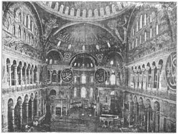
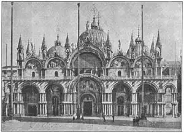

69
EASTERN EARLY CHRISTIANS
早期东方基督教建筑

ARE you a good detective? Can you tell what part of the country a person comes from, just by hearing him talk? At least you can tell the difference between a Southerner and a New Englander by the sound of their voices and the way they pronounce their words.
Men of one part of a country talk differently from men of another part. Men from different countries are different in other ways. They wear different kinds of clothes, they have different kinds of laws they eat different kinds of food, they paint different kinds of pictures, they build different kinds of buildings.
When the Roman emperor Constantine became a Christian, the Christians in Rome came out of the catacombs and built basilicas for churches. But subject to the Roman emperor there were other Christians who lived a long way from Rome. The Roman Empire reached eastward into Asia. Many people in this eastern part of the empire were Christians, too. Under Constantine they began to build churches just as the Christians in Rome did. But, belonging to a different part of the world, the eastern Christians built their churches in their own way. They didn’t care much for basilicas.
The kind of buildings the eastern Christians built was called Byzantine. That is because Byzantium was the largest city in the eastern part of the Roman Empire. The city is still a large and important city, but you won’t find Byzantium on the map. Byzantium changed its name. Constantine went to live in Byzantium and made it his capital instead of Rome. When he did this he named the city Constantinople or City of Constantine. But you won’t find Constantinople on the modern map, either, for now it is called Istanbul. The old name, Byzantine, however, stuck to the architecture that began to be used there.
There was one very important difference between this Byzantine architecture and the basilican architecture. A Byzantine church always had some kind of dome on it. In some churches the dome was small; in some it was covered with a square roof so you could see the dome only from below, on the inside; in many churches there were several domes.
The Pantheon in Rome has a dome, but the Pantheon is not like the Byzantine style of building. The Pantheon’s dome is made of concrete. The domes of Byzantine churches were usually made of bricks or tiles. The Pantheon dome rests on a circular wall. The Byzantine domes cover a square space.
The plan of most Byzantine churches looks like this: + . This kind of cross with all the arms equal is called a Greek cross. The central dome was generally right over the square in the center of the cross.
All these Byzantine buildings with domes were quite small until the Emperor Justinian came to rule. Justinian had his architects build the best and finest and biggest building ever built in the Byzantine style. We call it St. Sophia or Santa Sofia, but Sofia was not the name of any saint. Sofia means wisdom and the real name of Justinian’s church is Holy Wisdom. As most Americans call it St. Sophia, that is what we shall call it here.
See if you can understand how St. Sophia is built. In the middle is a huge dome. This dome rests on the top of four big arches that are shaped like croquet wickets. Each arch stands on one side of a square.
The bottom of the dome rests on top of each wicket or arch.

No.69-1 INTERIOR OF ST. SOPHIA（圣索菲亚教堂内部）
Courtesy of The University Prints
The spaces between the tops of the arches below the dome are not empty. They are filled in with brick so the bottom of the dome is resting on something all the way round. These spaces between the tops of the arches look like curved triangles pointed downward. The curved triangles are called pendentives . I hope you can remember that word pendentive. It is the use of pendentives that makes Byzantine architecture very different from other kinds. You won’t find any pendentives in the Pantheon in Rome, for instance.
In this picture you can see three of the arches under the dome and two of the pendentives between the arches.
As the dome of St. Sophia is made of bricks, the whole dome isn’t held together like a saucer or like the concrete Pantheon dome. This means that the dome pushes down on the walls that hold it up and also pushes outward or sideways on the walls. You know how a ladder leaning against the wall of a room will slide out at the bottom when a heavy man climbs the ladder unless the bottom is braced against something on the floor. Well, the dome pushes out in all directions just as the ladder does in one direction, and so there must be something to brace the walls to keep the dome from pushing them over.
The arches resting on the ground held the downward push of the dome. The architects of St. Sophia took care of the outward push very cleverly. On the outside of two of the arches, opposite each other, they built half-domes on walls reaching to the ground which braced the two arches just like book-ends pushing toward the middle of the building. They were props to hold the arches from falling outward.
Against the legs of the other two arches they built big piles of stone and brick and these piles kept the arches in place just like book-ends, too. These piles were called buttresses.
And then—after all this care and work—the dome of St. Sophia fell down! It collapsed a few years after it was finished. But we can’t blame the builders. An earthquake shook the bricks out of place and down came the dome. The builders couldn’t prevent an earthquake.
When they put the dome up again they made an improvement. All around the bottom of the new dome little windows were made—forty windows altogether. This let in such a band of light that the dome seems to be resting on light when you look up at it from inside, or as if it were hanging from the sky a few feet above the top of the four big arches.
The inside of St. Sophia has been called the most magnificent interior in the world. Along each side of the nave run aisles which have second stories or galleries. The galleries are supported by many columns of different colored marbles, some red, some green, some gray or black. Here’s a strange fact. There are 107 columns inside the building and the dome is just 107 feet across from one side to the other.
The lower walls are all covered with slabs of beautiful marble, in even more colors than the columns. Higher up on the walls are mosaic pictures with the colored pieces of glass and marble set in gold.
Almost a thousand years after the church of St. Sophia was built, Constantinople was captured by the Turks. The Turks are Mohammedans instead of Christians. They worship in mosques instead of churches. The leader of the Turks rode his horse right into St. Sophia and ordered the Christian church turned into a Mohammedan mosque. The beautiful Christian mosaics were covered with plaster and whitewash except for a few of the angels. And ever since then no one has been allowed to enter St. Sophia without first taking off his shoes. That is the rule for all mosques. No shoes may tread on Mohammed’s holy ground. You take off your shoes or you don’t get in.
From the outside St. Sophia looks big, but some people think it not very beautiful. Notice in the picture the great buttresses that stick up on each side of the arch to brace the push of the dome.
What about those towers? I wish you could forget they are there, because they look so important in the picture that you are apt not to look closely at the building itself. The towers were not part of the church, but were put on by the Turks when the church became a mosque.
But I don’t want you to believe that St. Sophia was the only great Byzantine building or that all Byzantine buildings were in Constantinople. The Byzantine style of architecture spread wherever the religion of the Greek Christian Church spread. The churches of Russia, for instance, were almost all built in the Byzantine style because the Russians became members of the Greek Church instead of members of the Roman Church. Churches in the Byzantine style are still being built in different parts of the world.
Just as famous as St. Sophia is another Byzantine church built in Venice, hundreds of years after St. Sophia. Venice was a seaport republic. The city belonged to no country. It was independent. Fleets of ships from Venice sailed away to the East and brought back the beautiful silks and spices of Asia. Venice became rich and powerful. Her people learned to love the bright colors of the goods from the East and they put so much lovely color on their Byzantine church that it shone like a beautiful jewel in the sun. They called their church St. Mark’s because it was built over the spot where Saint Mark was supposed to lie buried.
St. Mark’s has five domes—a big dome in the center and four smaller domes around it. The domes were not high enough to be seen well on the outside and so the Venetians made a much higher dome over each of the five domes. So each dome is double. The church is covered inside and out with brilliant mosaics and slabs of precious marbles called alabaster brought from far and near. The four bronze horses over the main door are almost as famous as the church itself. It is probably the most colorful building in the world.

No.69-3 ST. MARK’S, VENICE（威尼斯圣马可教堂）
Courtesy of The University Prints
And now one more score card. Here are the new names in this chapter. Each counts 20. Can you spell them correctly and make as good a score as in the last chapter? Try it—out loud, remember.
| Byzantine | □ | |
| Greek cross | □ | |
| pendentive | □ | |
| buttress | □ | |
| mosque | □ | |
| Score: _____ |
【中文阅读】
你是个好侦探吗？你能不能只听他讲话就能知道他来自你们国家的哪个地区的呢？至少可以通过听他们讲话的声音和发音方式分辨出谁是南方人，谁是新英格兰人。
一个国家不同地方的人说话方式会不同。不同国家的人在其他方面也有不同。他们穿着不同的服装，遵守不同的法律，吃不同的食物，画不同的画，造不同的房子。
当罗马皇帝君士坦丁成为基督徒时，罗马的基督徒们就走出地下墓穴，并且为教会建造长方形教堂。但是受罗马帝国管辖的还有另外一批基督徒，他们的住地离罗马很远。罗马帝国在东方的领地扩张到了亚洲。帝国东部的许多人都是基督徒。在君士坦丁的统治下，他们也开始像罗马基督徒那样建造教堂。但由于地理位置的不同，东部的基督徒以他们自己的方式建造教堂。他们不太在意长方形教堂。
罗马帝国东部的基督徒们建造的教堂叫做“拜占庭风格”。因为拜占庭是罗马帝国在东部的最大城市。虽然这座城市今天仍然是一座重要的大城，但在地图上却找不到。拜占庭已经改名换姓了。君士坦丁搬到拜占庭居住，用拜占庭代替罗马作他的首都。就在这时他将这座城市命名为君士坦丁堡。但你在现在的地图上也找不到君士坦丁堡，因为它现在叫做伊斯坦布尔。它曾经的名字，拜占庭，开始作为一种建筑风格流传开来。
拜占庭建筑和长方形教堂建筑有一明显不同。拜占庭风格的教堂几乎都有圆顶。某些教堂里的圆顶比较小；有些教堂的圆顶被方顶覆盖，所以你只有从圆顶下方，教堂里面才能观察到它；某些教堂里面甚至有好几个圆顶。
罗马的万神殿有一个圆顶，但是万神殿的风格却不同于拜占庭风格的建筑。万神殿的屋顶是水泥做的，安放在一座环形墙壁上；而拜占庭教堂的圆顶所用的建筑材料通常是砖块或瓷瓦，覆盖在一个方形空间上。
大多数拜占庭风格教堂的平面图看起来是这样的：+ 。这种四边等长的十字形叫 做“希腊十字形”。中间的圆顶正好就在中心广场的正上方，即十字形中心。
所有这些带圆顶的拜占庭建筑都偏小，直到东罗马帝国皇帝查士丁尼即位。查士丁尼和他的建筑师们建造了最大的拜占庭式建筑。我们称作“圣索菲亚大教堂”，但是索菲亚并不是某位圣徒的名字。“索菲亚”意为智慧，查士丁尼教堂的真正名字叫做“圣智大教堂”。我们就像大多数美国人一样，称它为“圣索菲亚教堂”。
我们来看看是否能明白圣索菲亚教堂是如何建造的。教堂中间是一个大圆顶。这个大圆顶被放置在四座大型拱门上，这些拱门看起来就像槌球的球门。而每一扇拱门又建在一个方形体的单边之上。
圆顶的底部坐落在槌球门或拱门的顶端。
拱门顶部与圆顶之间的空隙并不是空白。他们之间由砖块填充，所以圆顶的底部一直与拱门连接。这些拱门与天顶之间的空隙看起来像是头朝下的曲线三角形。这些曲线三角形叫做“三角穹窿”。希望你能记住这个词。正是曲线三角形的使用使得拜占庭建筑与众不同。譬如，在罗马斗兽场就找不到这样的曲线三角形。
在这幅图中可以看到圆顶下方有三座拱门，每两座拱门之间都有曲线三角形。
由于圣索菲亚教堂的圆顶是以砖块为材料，整个圆顶看起来并不像托盘或万神殿的水泥圆顶。这意味着圆顶向墙壁施力，墙壁又托起圆顶，而且圆顶也对下边四面的墙壁外推下压。众所周知，当我们把一架梯子靠在房间的墙上，让一个体重大的人上去时，梯腿就会打滑，除非在地板上用什么东西把梯腿固定住。梯腿只向一方施力，而圆顶却向四面施力，所以圆顶所依附的墙壁必须要有什么东西将它箍起来，以免圆顶将它们压倒。
安在地上的拱门顶住了圆顶的压力。圣索菲亚教堂的建筑师很聪明地考虑到了圆顶的外施力。所以他们就在两个对视的拱门外围，环形的落地墙上，建造了两个半圆顶，将两座拱门牢牢地箍住，类似书夹，牢牢地抵住建筑物的中心。它们支撑着整个拱门，防止拱门向外坍塌。他们还用大批石头和砖块堆在两座拱门的底部，以防拱门移位，也就像用书夹抵着一样。这些石碓叫做“拱壁”。
然后呢，尽管建筑师花了这么多的功夫和心思，圣索菲亚大教堂还是倒了！它在竣工几年后就倒塌了！但是我们不能怪罪建筑师。因为一场地震将砖块从建筑物里震了出来，圆顶紧接着就塌了。建筑师无论如何也阻止不了一场地震呀。
当他们再次架起圆顶时，就开始采取预防措施。圆顶的底部添加了一些小窗户——总共有四十个。这能使阳光从窗户里照进来。当你从里面向上看的时候，圆顶就像是架在光线上，或像是悬在离四座大拱门支撑的天顶好几英尺高的空中一样。
圣索菲亚教堂的内部装饰被称为世界上最奢华的。中殿每一侧都有两层长廊或画廊。画廊是由色彩斑斓的大理石柱支撑而成，有红的、绿的、橘黄的，还有灰色的和黑色的。这座教堂有这样一个令人称奇的事实，那就是它内部总共有一百零七根柱子，而圆顶的直径正好也是107英尺，横跨整个教堂。
墙壁底部贴满了漂亮的大理石瓷砖，颜色甚至比柱子还要丰富。稍微高一点的地方是嵌花式组合图案，由五彩玻璃和大理石在金子上镶嵌而成。
在圣索菲亚教堂建成大约一千多年后，君士坦丁堡被土耳其人占领。土耳其人是穆斯林，不信基督教。他们礼拜的场所不是教堂，而是清真寺。土耳其的首领骑着马冲进圣索菲亚大教堂，下令将教堂改为穆斯林的清真寺。除了几处天使的图案之外，所有美丽的镶嵌图都被石灰粉刷成白色。从那之后，任何人进圣索菲亚教堂都必须脱鞋。穆罕默德神圣的土地不容许任何一双鞋子的玷污。如不脱鞋，就不给进。
圣索菲亚教堂的外观看起来很大，但有的人认为这不够美观。注意一下图上的拱门两侧那支撑拱顶的扶壁。
那些塔有什么作用？真希望你能忘了它们的存在，因为塔在图上看起来太醒目，使人不再仔细地关注建筑物本身了。这些塔原不是教堂的组成部分，而是教堂变为清真寺后土耳其人加上去的。
我还是不希望把圣索菲亚教堂当成是唯一伟大的拜占庭风格的建筑，也并不是说拜占庭建筑就只在君士坦丁堡。其实，哪里有希腊的基督教会，哪里就有拜占庭风格的建筑。以俄罗斯的教堂为例，它们几乎都是拜占庭风格的，因为俄罗斯教会后来归属于希腊教会，而没有归属罗马教会。拜占庭风格的教堂如今在世界各地依然还在建造。
譬如建造在威尼斯的另一座拜占庭式教堂，晚于圣索菲亚教堂好几百年，却同样有名。威尼斯是一个港口共和国。这座城市不属于任何国家。它是独立的。舰队从威尼斯出发驶向东方，并从亚洲带回美丽的丝绸和香料。威尼斯开始变得强大而富有。她的人民开始学会欣赏这些从东方带回来的物品的绚丽色彩，并把这些色彩运用于拜占庭式教堂的装饰上，使拜占庭式教堂就像是闪耀在太阳下的宝石。他们称他们的教堂为圣马可教堂，因为它建造的地点被认为是圣马可的埋葬地。
圣马可教堂共有五座圆顶——中间是个大圆顶，四座小圆顶环绕其中。因为圆顶不够高，从外边根本就看不到，所以威尼斯人又在五座圆顶上加了一个大圆顶。所以每座圆顶就成了双层。教堂被覆盖在里面，外面是光鲜亮丽的镶嵌图案和从远近各地买来的名贵大理石。主门上的四匹青铜马和这座教堂一样有名。圣马可教堂可能是世界上色彩最丰富的建筑物了。
这里还有一张得分卡。上面记载了这一章出现的新名称。每个名称20分。你能正确地将他们拼写出来吗？看看得分是不是和上一章的一样高。试试吧，记住，要大声说出来哦。
| 拜占庭风格 | □ | |
| 希腊十字形 | □ | |
| 三角穹窿 | □ | |
| 扶壁 | □ | |
| 清真寺 | □ | |
| 总分: _______ |